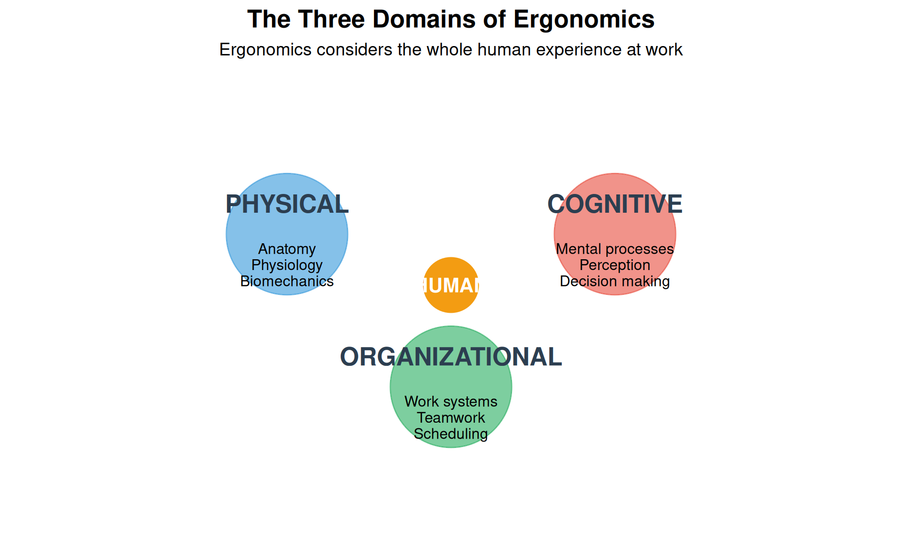
8 Ergonomics in Automated Manufacturing
8.1 Learning Objectives
By the end of this chapter, you will be able to:
- Define ergonomics and explain its importance in manufacturing
- Identify the seven major ergonomic risk factors
- Recognize common musculoskeletal disorders (MSDs) and their causes
- Apply ergonomic design principles to workstation design
- Conduct a REBA (Rapid Entire Body Assessment) analysis
- Understand the role of AI and automation in ergonomic assessment
- Design workstations that optimize human performance and safety
“Ergonomics is the science of fitting the job to the worker, not forcing the worker to fit the job.” — International Ergonomics Association
8.2 What is Ergonomics?
Ergonomics (from Greek ergon = work, nomos = laws) is the scientific discipline focused on understanding the interactions between humans and other elements of a system, with the goal of optimizing human well-being and overall system performance.
| Domain | Focus | Key Topics | Manufacturing Example |
|---|---|---|---|
| **Physical Ergonomics** | Human body's response to physical stress | Posture, material handling, repetitive motion, workplace layout, safety | Designing assembly workstations to reduce reaching |
| **Cognitive Ergonomics** | Mental processes and human-system interaction | Mental workload, decision-making, human-computer interaction, training | Designing HMI screens for quick comprehension |
| **Organizational Ergonomics** | Optimization of sociotechnical systems | Communication, teamwork, work schedules, quality management | Implementing job rotation to reduce fatigue |
8.2.1 Why Ergonomics Matters in Manufacturing
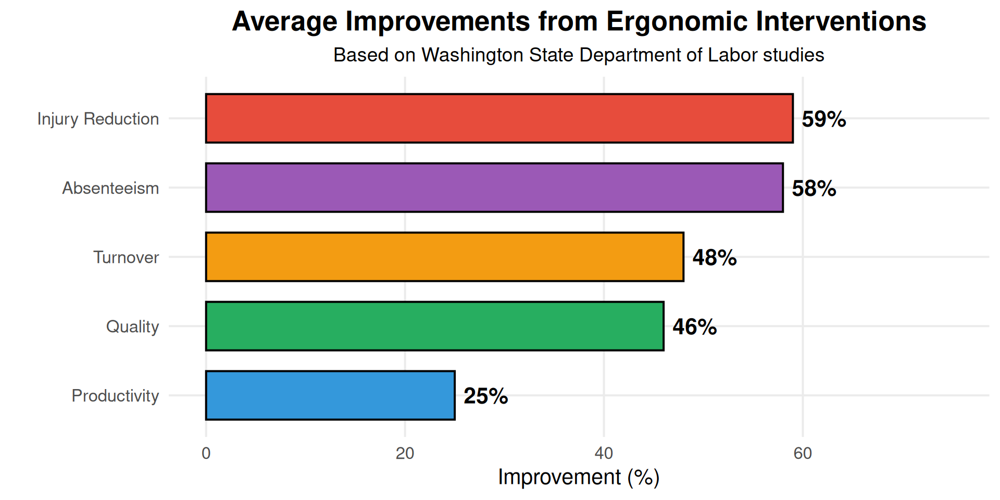
The Cost of Ignoring Ergonomics
Direct Costs: - Workers’ compensation claims - Medical expenses - Legal fees - Increased insurance premiums
Indirect Costs (often 4-10x direct costs): - Lost productivity - Training replacement workers - Reduced quality - Overtime to cover absent workers - Administrative time - Low morale
Statistics: - MSDs account for 33% of all workplace injuries - Average MSD claim costs $15,000-$20,000 - Lost workdays due to MSDs average 12 days per case - Carpal tunnel surgery costs approximately $30,000 per case (including lost time)
8.3 The Seven Ergonomic Risk Factors
The Initial Ergonomic Risk Assessment (INERA) identifies seven primary risk factors that contribute to musculoskeletal disorders. Understanding these factors is the first step in prevention.
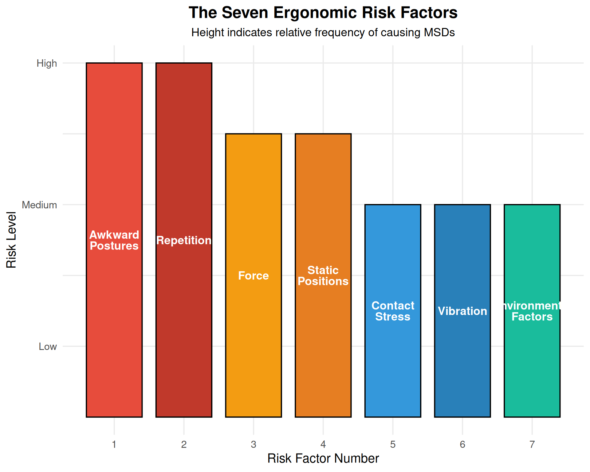
| # | Risk Factor | Definition | Examples | Body Areas Affected |
|---|---|---|---|---|
| 1 | **Awkward Postures** | Positions that deviate from neutral body alignment | Bent wrist, raised arms, twisted back, kneeling | Back, neck, shoulders, wrists, knees |
| 2 | **Repetition** | Performing the same motion repeatedly | Assembly line tasks, typing, packaging | Hands, wrists, shoulders, neck |
| 3 | **Force** | Amount of physical effort required to do a task | Lifting heavy objects, pushing/pulling, gripping tools | Back, shoulders, hands, arms |
| 4 | **Static Positions** | Maintaining the same position for extended periods | Standing in one spot, holding arms overhead | Legs, back, shoulders, neck |
| 5 | **Contact Stress** | Pressure from hard surfaces or edges on body tissues | Resting wrists on desk edge, kneeling on hard floor | Hands, knees, forearms |
| 6 | **Vibration** | Oscillating movements transferred to the body | Power tools, driving forklifts, jackhammers | Hands, arms, spine |
| 7 | **Environmental Factors** | Temperature, lighting, noise affecting work performance | Cold environments, poor lighting, excessive noise | Eyes, ears, overall fatigue |
8.3.1 Risk Factor 1: Awkward Postures
Neutral posture is the position where joints are naturally aligned, minimizing stress on muscles, tendons, and skeletal system. Any deviation from neutral increases injury risk.
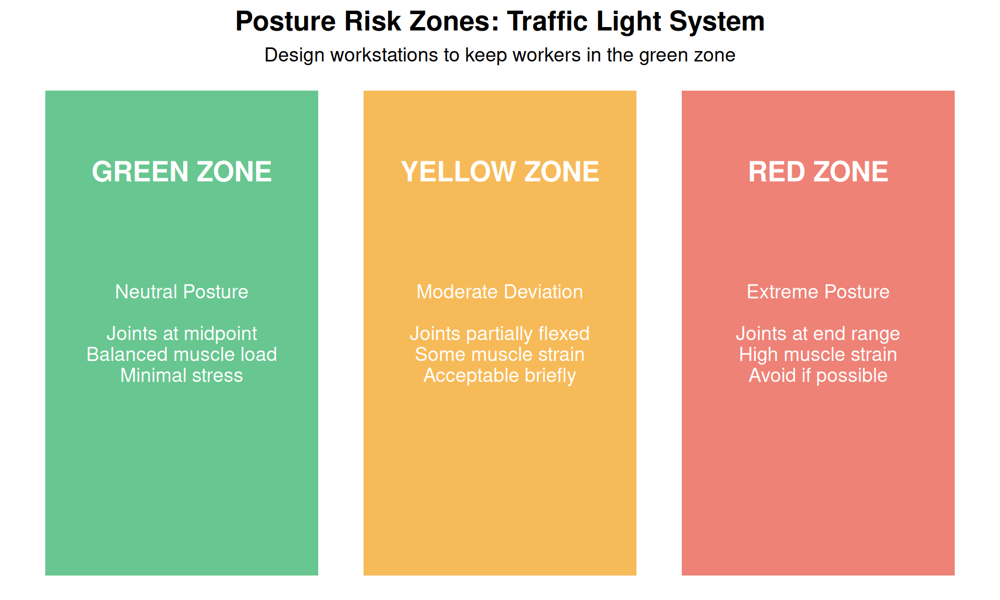
| Body Part | Neutral Position | Awkward Position | Risk |
|---|---|---|---|
| **Head/Neck** | Balanced on spine, looking straight ahead | Bent forward >20°, tilted, twisted | Neck pain, headaches |
| **Shoulders** | Relaxed, arms at sides | Raised, reaching overhead, behind body | Shoulder impingement, rotator cuff |
| **Elbows** | Close to body, bent 90-120° | Fully extended or tightly bent | Tennis elbow, golfer's elbow |
| **Wrists** | Straight, in line with forearm | Bent up/down, twisted side-to-side | Carpal tunnel, tendinitis |
| **Back** | Natural S-curve maintained | Bent forward, twisted, arched | Low back pain, disc herniation |
| **Hips/Knees** | Thighs parallel to floor, feet flat | Squatting, kneeling, twisted | Knee injuries, hip pain |
8.3.2 Risk Factor 2: Repetition
Repetitive motion is one of the most significant risk factors in manufacturing. The risk increases with:
- Frequency: How often the motion occurs
- Duration: How long the task is performed
- Recovery time: Rest between repetitions
| Cycle Time | Repetitions/Hour | Risk Level | Action Required |
|---|---|---|---|
| > 30 seconds | < 120 | Low | Monitor |
| 15-30 seconds | 120-240 | Moderate | Investigate and consider changes |
| < 15 seconds | > 240 | High | Immediate intervention needed |
8.3.3 Risk Factor 3: Force
The amount of physical effort required significantly impacts injury risk. Force requirements depend on:
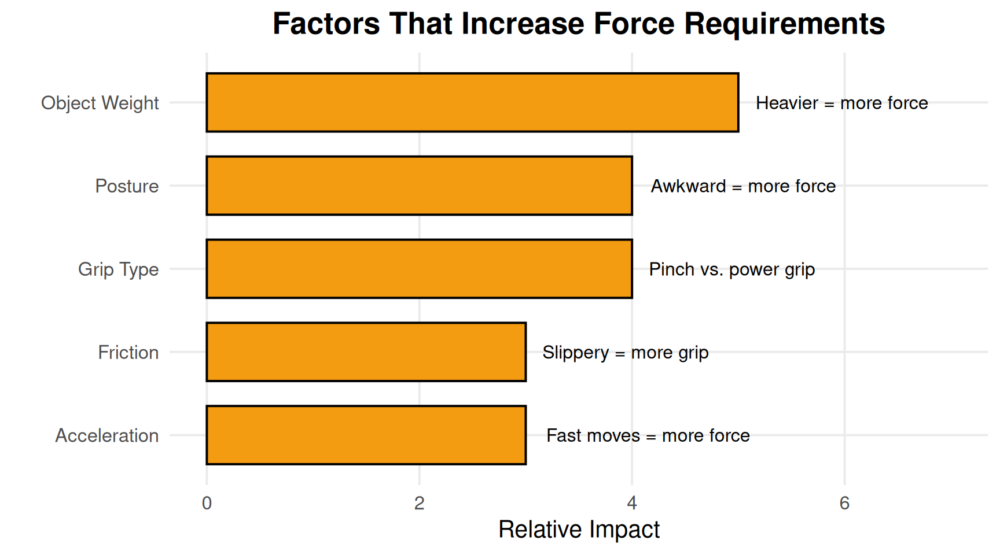
Interactive Exercise: Identify the Risk Factors
Scenario: An assembly line worker performs the following task 400 times per shift:
- Reaches overhead to grab a part from a bin
- Holds the part while inserting 4 screws with a power screwdriver
- Places the completed assembly on a conveyor
- The workstation has poor lighting and the floor is concrete
Identify all risk factors present:
Answer: 1. Awkward Posture - Reaching overhead 2. Repetition - 400 cycles per shift 3. Force - Gripping parts, controlling screwdriver 4. Static Position - Holding part during assembly 5. Vibration - Power screwdriver 6. Contact Stress - Standing on concrete (feet) 7. Environmental - Poor lighting
This task has ALL SEVEN risk factors present!
8.4 Musculoskeletal Disorders (MSDs)
Musculoskeletal Disorders (MSDs) are injuries and disorders affecting muscles, nerves, tendons, ligaments, joints, cartilage, and spinal discs. They are the most common and costly occupational health problem.
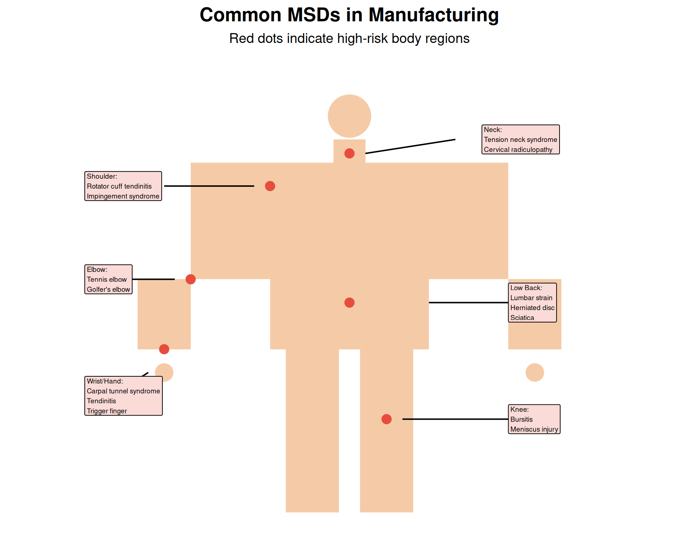
| Disorder | Description | Causes | Symptoms |
|---|---|---|---|
| **Carpal Tunnel Syndrome** | Compression of median nerve in the wrist | Repetitive wrist motions, forceful gripping, vibration | Numbness, tingling, weakness in hand |
| **Tendinitis** | Inflammation of tendons from overuse | Repetitive motions, awkward postures, force | Pain, swelling, stiffness in affected area |
| **Low Back Pain** | Strain or injury to muscles/discs of lower back | Heavy lifting, bending, twisting, vibration | Pain, stiffness, limited mobility |
| **Rotator Cuff Injury** | Damage to shoulder tendons | Overhead work, repetitive shoulder motion | Pain, weakness, limited range of motion |
| **Epicondylitis** | Inflammation of elbow tendons (tennis/golfer's elbow) | Repetitive arm/wrist motions, forceful gripping | Pain on outside (tennis) or inside (golfer's) of elbow |
| **Trigger Finger** | Finger gets stuck in bent position | Repetitive gripping, hand tools | Clicking, locking of finger |
8.4.1 The MSD Development Cycle
MSDs typically develop gradually through a predictable cycle:
Warning: Using `size` aesthetic for lines was deprecated in ggplot2 3.4.0.
ℹ Please use `linewidth` instead.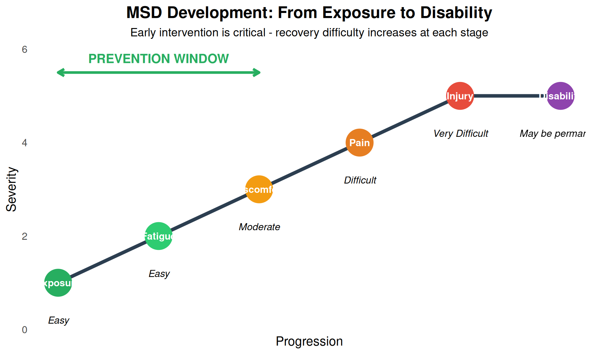
Warning Signs: When to Take Action
Early Warning Signs (Act Immediately): - Persistent fatigue in specific body parts - Discomfort during or after work - Tightness or stiffness - Minor aching or soreness
Serious Warning Signs (Seek Medical Attention): - Persistent pain that doesn’t go away with rest - Numbness or tingling - Loss of strength or grip - Swelling or inflammation - Reduced range of motion - Pain that wakes you at night
Key Message: Report symptoms early! The earlier the intervention, the better the outcome.
8.5 Preventing MSDs: Best Practices
Prevention is far more effective and less costly than treatment. Here are evidence-based strategies for MSD prevention:
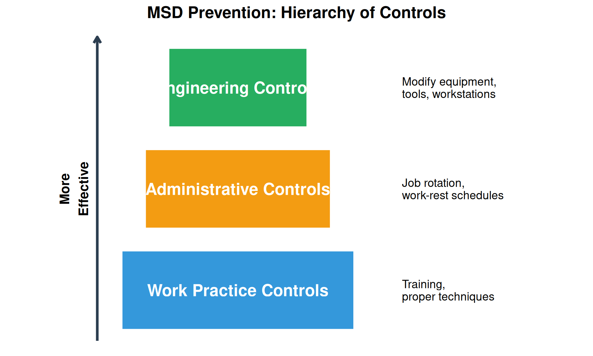
| Strategy | Engineering Solutions | Worker Actions |
|---|---|---|
| **Maintain Neutral Posture** | Adjustable workstations, proper tool selection | Awareness of body position, stretching |
| **Reduce Repetition** | Automation, job rotation between stations | Vary tasks when possible |
| **Minimize Force** | Mechanical assists, better handles, lighter parts | Use tools properly, ask for help with heavy items |
| **Avoid Static Positions** | Sit-stand workstations, adjustable fixtures | Shift weight, change positions frequently |
| **Eliminate Contact Stress** | Padding, rounded edges, anti-fatigue mats | Use padding, wear appropriate PPE |
| **Control Vibration** | Vibration-dampening tools, isolation mounts | Limit exposure time, grip tools lightly |
| **Optimize Environment** | Proper lighting, climate control, noise reduction | Report issues, use available controls |
| **Allow Recovery** | Rest break areas, micro-break reminders | Take breaks, report fatigue |
8.5.1 Proper Lifting Technique
Improper lifting is a leading cause of back injuries. The NIOSH lifting equation provides guidelines, but proper technique is fundamental.
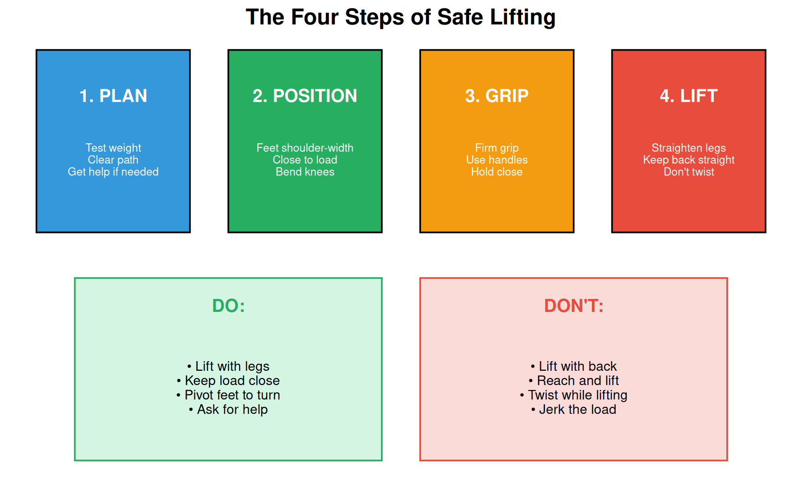
8.6 Ergonomic Design Principles
Effective ergonomic design follows established principles that account for human capabilities and limitations.
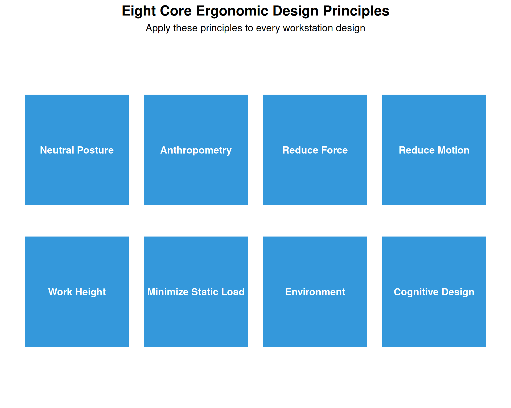
| Principle | Description | Implementation |
|---|---|---|
| **1. Neutral Posture** | Design to promote natural, balanced body positions | Adjustable workstations, proper tool angles, monitor height |
| **2. Accommodate Anthropometry** | Accommodate different body sizes (5th-95th percentile) | Adjustable equipment, multiple sizes available, reach considerations |
| **3. Reduce Excessive Force** | Minimize force requirements for all tasks | Mechanical assists, better handles, reduce weight, improve grip |
| **4. Reduce Excessive Motion** | Reduce extreme motions, frequencies, and durations | Bring work closer, eliminate unnecessary steps, use fixtures |
| **5. Optimize Work Height** | Match work surface height to task requirements | Precision work higher, heavy work lower, adjustable surfaces |
| **6. Minimize Static Load** | Avoid holding same position for extended periods | Support arms, provide seating options, allow movement |
| **7. Environmental Conditions** | Optimize lighting, temperature, noise, air quality | Task lighting, climate control, noise barriers, ventilation |
| **8. Cognitive Support** | Design interfaces for easy understanding and use | Clear displays, logical controls, consistent feedback |
8.6.1 Anthropometry: Designing for Human Dimensions
Anthropometry is the scientific study of human body measurements. Workstations must accommodate the range of workers who will use them.
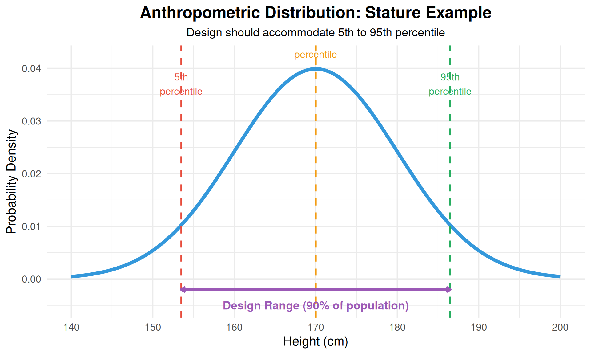
| Measurement | 5th % Female (cm) | 50th % Combined (cm) | 95th % Male (cm) | Design Application |
|---|---|---|---|---|
| Stature (Standing Height) | 150 | 170 | 188 | Overhead clearance, door height |
| Eye Height (Standing) | 138 | 158 | 176 | Display/sign height |
| Shoulder Height | 121 | 140 | 158 | Shelf maximum height |
| Elbow Height | 93 | 104 | 117 | Work surface height (standing) |
| Knuckle Height | 64 | 74 | 85 | Handle height for pulling |
| Sitting Height | 79 | 87 | 97 | Overhead clearance (seated) |
| Seated Eye Height | 68 | 76 | 85 | Monitor height (seated) |
| Seated Elbow Height | 18 | 24 | 31 | Armrest, work surface height |
| Thigh Clearance | 12 | 15 | 19 | Under-desk clearance |
| Forward Reach | 64 | 73 | 84 | Maximum reach distance |
8.6.2 Work Surface Height Guidelines
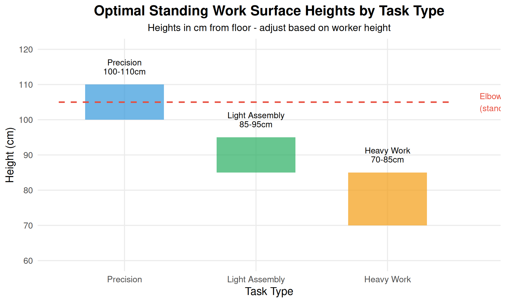
Discussion: Why Different Heights for Different Tasks?
Precision Work (100-110 cm): - Requires close visual inspection - Hands need to be at or above eye level - Examples: Electronics assembly, inspection, watchmaking
Light Assembly (85-95 cm): - General manipulation tasks - Hands at about elbow height - Examples: Packaging, general assembly, sorting
Heavy Work (70-85 cm): - Requires pushing, pressing, or lifting - Lower height allows use of body weight - Examples: Packing boxes, pressing operations, heavy assembly
Key Principle: The work surface height should allow the worker to maintain neutral posture while performing the specific task.
8.7 Ergonomic Assessment Tools
Several standardized tools help assess ergonomic risk and guide interventions. Understanding these tools is essential for the process engineer.
| Tool | Full Name | Focus Area | Best Used For |
|---|---|---|---|
| **RULA** | Rapid Upper Limb Assessment | Upper body postures | Sedentary/computer work, assembly |
| **REBA** | Rapid Entire Body Assessment | Whole body postures | Manufacturing, healthcare, varied postures |
| **NIOSH Lifting Equation** | NIOSH Lifting Equation | Manual lifting tasks | Lifting, lowering, carrying tasks |
| **OCRA** | Occupational Repetitive Action | Repetitive upper limb tasks | Assembly lines, repetitive manufacturing |
| **EAWS** | Ergonomic Assessment Worksheet | Comprehensive workstation | Complete workstation analysis |
| **Snook Tables** | Snook Psychophysical Tables | Manual material handling | Push, pull, lift, lower, carry tasks |
8.7.1 REBA: Rapid Entire Body Assessment
REBA is one of the most widely used ergonomic assessment tools in manufacturing. It evaluates the whole body posture and provides a risk score.
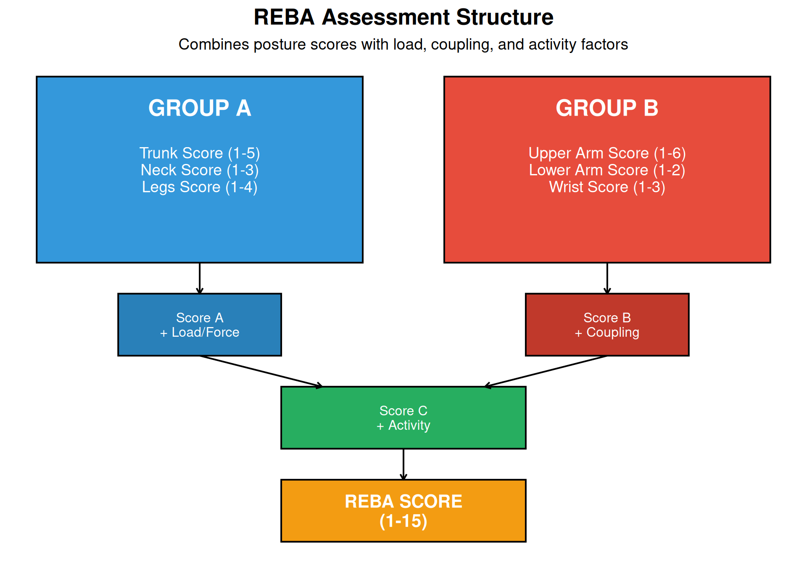
8.7.2 REBA Scoring Tables
Trunk Posture Scoring:
| Position | Score | Adjustment |
|---|---|---|
| Upright (0°) | 1 | — |
| 0-20° flexion/extension | 2 | +1 if twisted |
| 20-60° flexion, >20° extension | 3 | +1 if twisted |
| >60° flexion | 4 | +1 if twisted or side-bending |
Neck Posture Scoring:
| Position | Score | Adjustment |
|---|---|---|
| 0-20° flexion | 1 | +1 if twisted or side-bending |
| >20° flexion or extension | 2 | +1 if twisted or side-bending |
REBA Action Levels:
| REBA Score | Risk Level | Action |
|---|---|---|
| 1 | Negligible | None necessary |
| 2-3 | Low | May be necessary |
| 4-7 | Medium | Necessary |
| 8-10 | High | Necessary soon |
| 11-15 | Very High | Necessary NOW |
8.7.3 REBA Employee Assessment Worksheet
The REBA Employee Assessment Worksheet provides a systematic approach to evaluating whole-body posture risk. This worksheet is based on the original work by Hignett and McAtamney (2000) and is widely used in manufacturing ergonomic assessments.
8.7.3.1 Group A: Neck, Trunk, and Leg Analysis
Step 1: Neck Posture Score
| Position | Base Score | Adjustment | Max Score |
|---|---|---|---|
| 0-20° flexion | 1 | +1 if twisted or side-bending | 2 |
| >20° flexion | 2 | +1 if twisted or side-bending | 3 |
| In extension | 2 | +1 if twisted or side-bending | 3 |
Step 2: Trunk Posture Score
| Position | Base Score | Adjustment | Max Score |
|---|---|---|---|
| Upright (0°) | 1 | — | 1 |
| 0-20° flexion or extension | 2 | +1 if twisted or side-bending | 3 |
| 20-60° flexion or >20° extension | 3 | +1 if twisted or side-bending | 4 |
| >60° flexion | 4 | +1 if twisted or side-bending | 5 |
Step 3: Legs Posture Score
| Position | Base Score | Knee Adjustment | Max Score |
|---|---|---|---|
| Bilateral weight bearing, walking, or sitting | 1 | +1 if knees 30-60° flexion; +2 if knees >60° | 3 |
| Unilateral weight bearing, featherweight, or unstable posture | 2 | +1 if knees 30-60° flexion; +2 if knees >60° | 4 |
Step 4: Look Up Table A Score
| Trunk Score | Neck Score | Legs = 1 | Legs = 2 | Legs = 3 | Legs = 4 |
|---|---|---|---|---|---|
| 1 | 1 | 1 | 1 | 3 | 4 |
| 1 | 2 | 2 | 2 | 3 | 4 |
| 1 | 3 | 2 | 3 | 4 | 5 |
| 2 | 1 | 2 | 3 | 4 | 5 |
| 2 | 2 | 3 | 4 | 5 | 6 |
| 2 | 3 | 4 | 5 | 6 | 7 |
| 3 | 1 | 3 | 4 | 5 | 6 |
| 3 | 2 | 4 | 5 | 6 | 7 |
| 3 | 3 | 5 | 6 | 7 | 8 |
| 4 | 1 | 4 | 5 | 6 | 7 |
| 4 | 2 | 5 | 6 | 7 | 8 |
| 4 | 3 | 6 | 7 | 8 | 9 |
| 5 | 1 | 6 | 7 | 8 | 9 |
| 5 | 2 | 7 | 8 | 9 | 9 |
| 5 | 3 | 8 | 9 | 9 | 9 |
Step 5: Add Load/Force Score
| Load/Force | Score | Shock Adjustment |
|---|---|---|
| < 5 kg (< 11 lbs) | 0 | — |
| 5-10 kg (11-22 lbs) | 1 | +1 if shock or rapid build-up of force |
| > 10 kg (> 22 lbs) | 2 | +1 if shock or rapid build-up of force |
\[\text{Score A} = \text{Table A Score} + \text{Load/Force Score}\]
8.7.3.2 Group B: Arm and Wrist Analysis
Step 6: Upper Arm Posture Score
| Position | Base Score | Adjustments | Score Range |
|---|---|---|---|
| 20° extension to 20° flexion | 1 | +1 if shoulder raised; +1 if arm abducted; -1 if leaning/supporting arm weight | 1-3 |
| >20° extension | 2 | +1 if shoulder raised; +1 if arm abducted; -1 if leaning/supporting arm weight | 1-4 |
| 20-45° flexion | 2 | +1 if shoulder raised; +1 if arm abducted; -1 if leaning/supporting arm weight | 1-4 |
| 45-90° flexion | 3 | +1 if shoulder raised; +1 if arm abducted; -1 if leaning/supporting arm weight | 2-5 |
| >90° flexion | 4 | +1 if shoulder raised; +1 if arm abducted; -1 if leaning/supporting arm weight | 3-6 |
Step 7: Lower Arm Posture Score
| Position | Score |
|---|---|
| 60-100° flexion (optimal range) | 1 |
| < 60° or > 100° flexion | 2 |
Step 8: Wrist Posture Score
| Position | Base Score | Adjustment | Max Score |
|---|---|---|---|
| 0-15° flexion or extension (neutral) | 1 | +1 if wrist is twisted or deviated | 2 |
| >15° flexion or extension | 2 | +1 if wrist is twisted or deviated | 3 |
Step 9: Look Up Table B Score
| Upper Arm Score | Lower Arm Score | Wrist = 1 | Wrist = 2 | Wrist = 3 |
|---|---|---|---|---|
| 1 | 1 | 1 | 1 | 2 |
| 1 | 2 | 2 | 2 | 3 |
| 2 | 1 | 1 | 2 | 3 |
| 2 | 2 | 2 | 3 | 4 |
| 3 | 1 | 3 | 4 | 5 |
| 3 | 2 | 4 | 5 | 5 |
| 4 | 1 | 4 | 5 | 6 |
| 4 | 2 | 5 | 6 | 7 |
| 5 | 1 | 6 | 7 | 8 |
| 5 | 2 | 7 | 8 | 8 |
| 6 | 1 | 7 | 8 | 9 |
| 6 | 2 | 8 | 9 | 9 |
Step 10: Add Coupling Score
| Coupling Quality | Description | Score |
|---|---|---|
| Good | Well-fitting handle and mid-range power grip | 0 |
| Fair | Hand hold acceptable but not ideal; coupling acceptable via other body part | 1 |
| Poor | Hand hold not acceptable although possible; no handles | 2 |
| Unacceptable | Awkward, unsafe grip; no handles; coupling unacceptable using other body parts | 3 |
\[\text{Score B} = \text{Table B Score} + \text{Coupling Score}\]
8.7.3.3 Calculating the Final REBA Score
Step 11: Look Up Table C Score
| Score A | B=1 | B=2 | B=3 | B=4 | B=5 | B=6 | B=7 | B=8 | B=9 | B=10 | B=11 | B=12 |
|---|---|---|---|---|---|---|---|---|---|---|---|---|
| 1 | 1 | 1 | 1 | 2 | 3 | 3 | 4 | 5 | 6 | 7 | 7 | 7 |
| 2 | 1 | 2 | 2 | 3 | 4 | 4 | 5 | 6 | 6 | 7 | 7 | 8 |
| 3 | 1 | 2 | 3 | 3 | 4 | 5 | 6 | 7 | 7 | 8 | 8 | 8 |
| 4 | 2 | 3 | 3 | 4 | 5 | 6 | 7 | 8 | 8 | 9 | 9 | 9 |
| 5 | 3 | 4 | 4 | 5 | 6 | 7 | 8 | 8 | 9 | 9 | 9 | 10 |
| 6 | 3 | 4 | 5 | 6 | 7 | 8 | 8 | 9 | 9 | 10 | 10 | 10 |
| 7 | 4 | 5 | 6 | 7 | 8 | 8 | 9 | 9 | 10 | 10 | 11 | 11 |
| 8 | 5 | 6 | 7 | 8 | 8 | 9 | 9 | 10 | 10 | 11 | 11 | 11 |
| 9 | 6 | 6 | 7 | 8 | 9 | 9 | 10 | 10 | 10 | 11 | 11 | 12 |
| 10 | 7 | 7 | 8 | 9 | 9 | 10 | 10 | 11 | 11 | 11 | 12 | 12 |
| 11 | 7 | 7 | 8 | 9 | 9 | 10 | 11 | 11 | 11 | 12 | 12 | 12 |
| 12 | 7 | 8 | 8 | 9 | 9 | 10 | 11 | 11 | 12 | 12 | 12 | 12 |
Step 12: Add Activity Score
| Activity Condition | Score |
|---|---|
| One or more body parts are static (held > 1 minute) | +1 |
| Repeated small range actions (> 4× per minute, excluding walking) | +1 |
| Action causes rapid large range changes in postures or unstable base | +1 |
\[\boxed{\text{REBA Score} = \text{Table C Score} + \text{Activity Score}}\]
8.7.3.4 REBA Score Interpretation
| REBA Score | Risk Level | Action Required | Priority |
|---|---|---|---|
| 1 | Negligible | None necessary | Continue monitoring |
| 2-3 | Low | May be necessary | Investigate further when convenient |
| 4-7 | Medium | Necessary | Implement changes to reduce risk |
| 8-10 | High | Necessary soon | Investigate and implement changes soon |
| 11-15 | Very High | Necessary NOW | Stop task and make immediate changes |
8.7.4 REBA Example Calculation: Step-by-Step Walkthrough
Let’s work through a complete REBA assessment for a manufacturing worker performing a packaging task.
Scenario: A worker stands at a packaging station, bending forward to pick up items from a low bin and placing them into boxes on a conveyor. The task is performed continuously for 4-hour shifts.
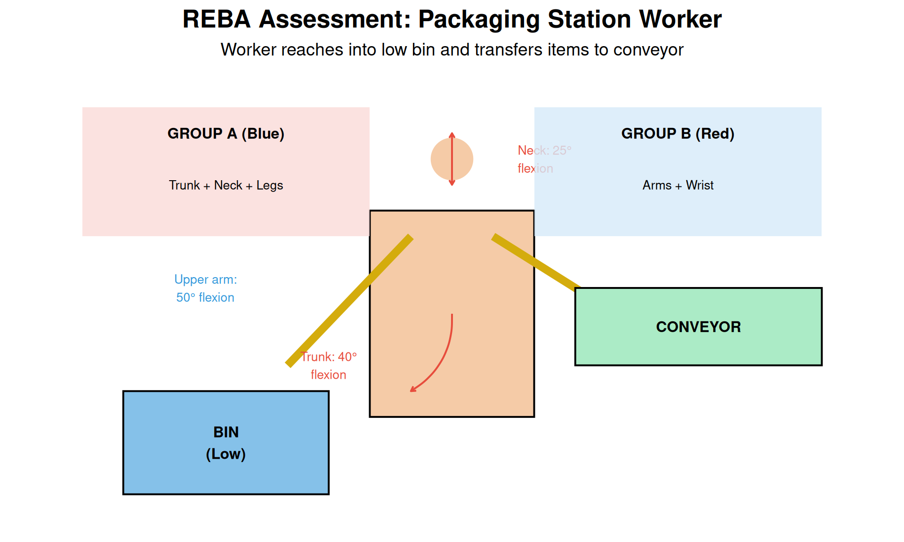
8.7.4.1 Step-by-Step Assessment
Live cell — try different posture, load, or coupling scores.
8.7.4.2 Recommendations for This Assessment
Based on the REBA score of 8 (HIGH risk), the following interventions should be implemented soon:
| Priority | Intervention | Target Risk Factor | Expected Impact |
|---|---|---|---|
| 1 | Raise bin height | Trunk flexion | Reduce trunk score from 4 to 2 |
| 2 | Add tilt mechanism | Neck flexion | Reduce neck score from 2 to 1 |
| 3 | Reduce load weight | Load/force | Reduce load score from 1 to 0 |
| 4 | Implement job rotation | Repetition | Reduce activity score |
8.7.5 REBA Example Calculation
Live cell — plug in your own posture scores and re-run.
Practice Problem: REBA Assessment
Scenario: A worker is performing a task with the following postures:
- Trunk: 30° forward flexion, twisted
- Neck: 15° flexion
- Legs: Weight on one leg
- Upper Arm: 60° flexion, shoulder raised
- Lower Arm: 80° flexion
- Wrist: Neutral
- Load: 8 kg carried
- Coupling: Fair grip (handles exist but not ideal)
- Activity: Repeated small range actions
Calculate the REBA score and determine the action level.
Solution:
Trunk: 3 + 1 (twisted) = 4
Neck: 1 (0-20° flexion)
Legs: 2 (weight on one leg)
Table A = 5
Load/Force = 1 (5-10kg)
Score A = 6
Upper Arm: 3 + 1 (raised) = 4
Lower Arm: 1 (60-100°)
Wrist: 1 (neutral)
Table B = 4
Coupling = 1 (fair)
Score B = 5
Table C (Score A=6, Score B=5) = 8
Activity = +1 (repeated actions)
REBA Score = 9
Risk Level: HIGH - Action necessary soon8.7.6 NIOSH Lifting Equation
The NIOSH Lifting Equation calculates a Recommended Weight Limit (RWL) for lifting tasks.
\[RWL = LC \times HM \times VM \times DM \times AM \times FM \times CM\]
Where:
| Factor | Name | Value | Description |
|---|---|---|---|
| LC | Load Constant | 23 kg (51 lb) | Maximum weight under ideal conditions |
| HM | Horizontal Multiplier | 25/H | H = horizontal distance from midpoint between ankles to hands (cm) |
| VM | Vertical Multiplier | 1 - 0.003|V-75| | V = vertical height of hands at start (cm) |
| DM | Distance Multiplier | 0.82 + 4.5/D | D = vertical travel distance (cm) |
| AM | Asymmetric Multiplier | 1 - 0.0032A | A = angle of asymmetry (degrees) |
| FM | Frequency Multiplier | Table lookup | Based on lift frequency and duration |
| CM | Coupling Multiplier | Table lookup | Based on hand-load coupling quality |
Lifting Index (LI) indicates risk level:
\[LI = \frac{\text{Actual Weight}}{\text{RWL}}\]
| Lifting Index | Risk | Action |
|---|---|---|
| LI ≤ 1.0 | Low | Task acceptable for most workers |
| 1.0 < LI ≤ 2.0 | Moderate | Some workers may be at risk - consider changes |
| 2.0 < LI ≤ 3.0 | High | Many workers at risk - changes recommended |
| LI > 3.0 | Very High | Unacceptable - immediate changes required |
Live cell — change the distances, angle, or frequency and re-run.
8.8 AI-Powered Ergonomic Assessment
Artificial intelligence is revolutionizing ergonomic assessment by enabling real-time, automated analysis of worker postures without disrupting operations.
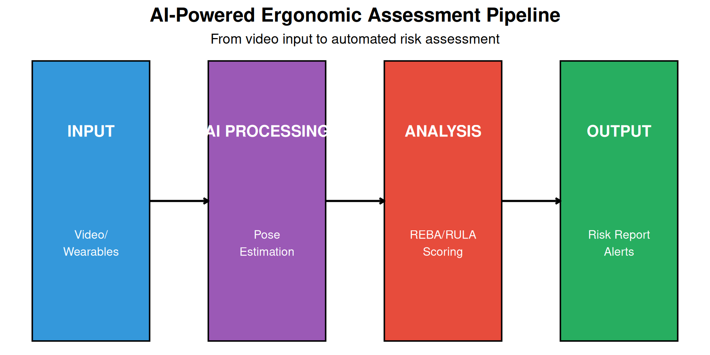
| Tool | Technology | Key Features | Best For |
|---|---|---|---|
| **TuMeke Ergonomics** | Computer vision + wearables | Real-time REBA scoring, multi-camera support | Manufacturing, warehousing |
| **VelocityEHS** | AI video analysis | Automated job analysis, risk prioritization | Enterprise-wide programs |
| **Protex AI** | Real-time video AI | Privacy-preserving analysis, floor-wide monitoring | Large facilities, privacy-conscious |
| **SoterTask** | Wearable sensors + AI | Wearable clips, real-time coaching, haptic feedback | Individual worker coaching |
| **Viso.ai** | Custom AI models | Custom pose detection, integration APIs | Custom integrations |
| **ErgoPlus Platform** | Mobile app + AI | Mobile assessment, improvement tracking | Field assessments |
8.8.1 Benefits of AI Ergonomic Assessment
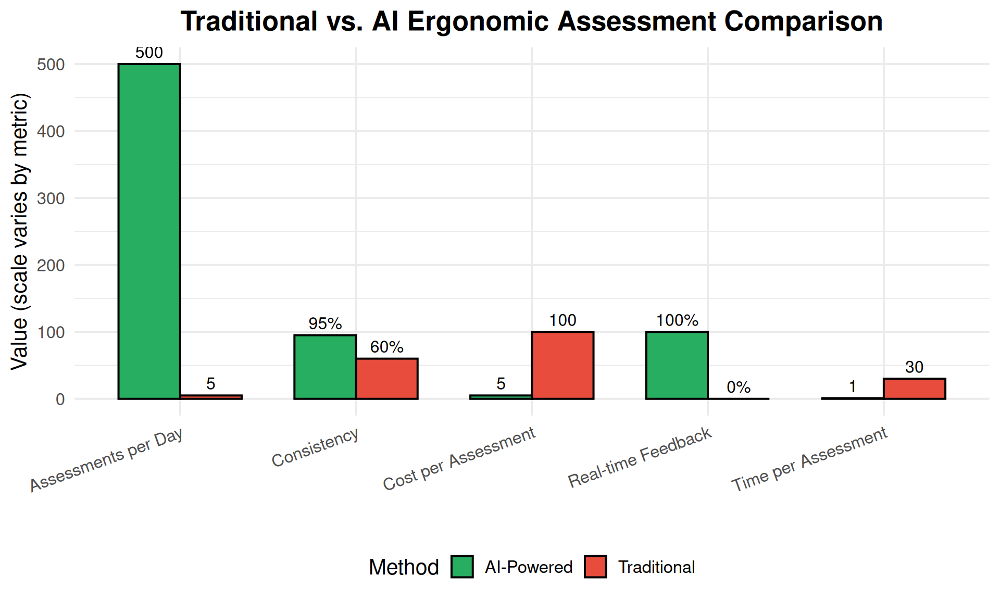
8.9 Ergonomics in Automated Manufacturing
Industrial automation inherently involves the mechanization of processes traditionally carried out by human operators. In the automation design phase, engineers must strike a balance between mechanization and the necessary human interaction with these systems.
8.9.1 Human-Automation Interaction Points
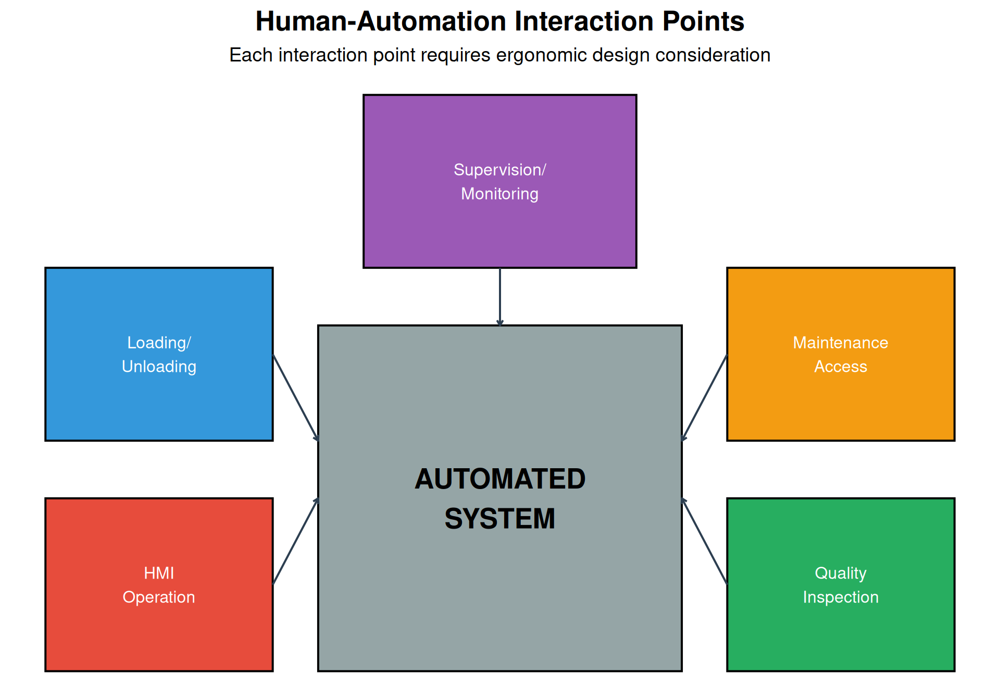
| Interaction Point | Ergonomic Challenges | Design Solutions |
|---|---|---|
| **Loading/Unloading** | Repetitive motion, lifting, reaching, awkward postures | Height-adjustable conveyors, lift assists, indexing fixtures |
| **HMI Operation** | Static posture, visual strain, cognitive load | Adjustable screens, proper height, clear interface design |
| **Maintenance** | Awkward access, confined spaces, tool use | Adequate access space, tool organization, proper lighting |
| **Quality Inspection** | Static positions, visual strain, fine motor tasks | Adjustable fixtures, magnification, ergonomic seating |
| **Supervision** | Sedentary position, cognitive fatigue, vigilance | Multiple monitors at eye level, alert systems, task variety |
8.9.2 Collaborative Robot Ergonomics
Cobots present unique ergonomic opportunities and challenges:
| Aspect | Opportunity | Challenge |
|---|---|---|
| **Task Allocation** | Robot handles heavy, repetitive, or precision tasks | Determining optimal task division |
| **Workstation Layout** | Shared workspace allows flexible positioning | Ensuring adequate space for human movement |
| **Pacing** | Robot adapts to human pace, not vice versa | Avoiding pressure from robot efficiency |
| **Force Assistance** | Robot provides powered assist for lifting | Proper force limits to prevent injury on contact |
| **Cognitive Load** | Robot handles routine tasks, human focuses on judgment | Maintaining situational awareness |
8.10 Employer Responsibilities
Employers have both legal and ethical obligations to protect workers from ergonomic hazards.
| Responsibility | Actions |
|---|---|
| **Management Commitment** | Allocate resources, set goals, lead by example |
| **Worker Involvement** | Include workers in assessments, design teams, solution development |
| **Training** | Ergonomics awareness, proper techniques, symptom recognition |
| **Hazard Identification** | Regular assessments, worker surveys, injury analysis |
| **Early Reporting** | Non-punitive reporting system, prompt response to symptoms |
| **Hazard Control** | Engineering controls, work organization, PPE as last resort |
| **Program Evaluation** | Track injuries, measure improvements, adjust programs |
OSHA Ergonomics Guidelines
While OSHA does not have a specific ergonomics standard, employers are still responsible under the General Duty Clause (Section 5(a)(1)) which requires employers to provide a workplace “free from recognized hazards.”
OSHA’s Recommended Program Elements: 1. Management leadership 2. Worker participation 3. Hazard identification and assessment 4. Hazard prevention and control 5. Education and training 6. Program evaluation
Industry-Specific Guidelines: - Poultry Processing - Nursing Homes - Retail Grocery Stores - Shipyards
Visit: OSHA Ergonomics eTool
8.11 Case Study: Ergonomics in Automated Assembly
Company: Automotive parts manufacturer
Problem: High rate of upper extremity MSDs in assembly department - 15 recordable injuries per year - Lost workdays averaging 20 days per case - Workers’ comp costs exceeding $300,000 annually
Assessment Findings:
| Workstation | Primary Issues | REBA Score | Risk Level |
|---|---|---|---|
| Sub-assembly | Overhead reaching, high repetition | 9 | High |
| Main line | Forward bending, static standing | 8 | High |
| Inspection | Awkward wrist postures, visual strain | 7 | Medium |
| Packaging | Lifting, carrying, repetition | 10 | Very High |
Interventions Implemented:
- Sub-assembly:
- Tilting fixtures to bring work closer
- Parts bins repositioned to eliminate overhead reaching
- Cobot added for repetitive insertion tasks
- Main line:
- Height-adjustable workstations installed
- Anti-fatigue mats added
- Job rotation implemented
- Inspection:
- Magnifying task lights installed
- Angled fixtures to reduce wrist bending
- Ergonomic seating provided
- Packaging:
- Vacuum lift assists installed
- Conveyor heights adjusted
- Case erectors automated
Results After 18 Months:
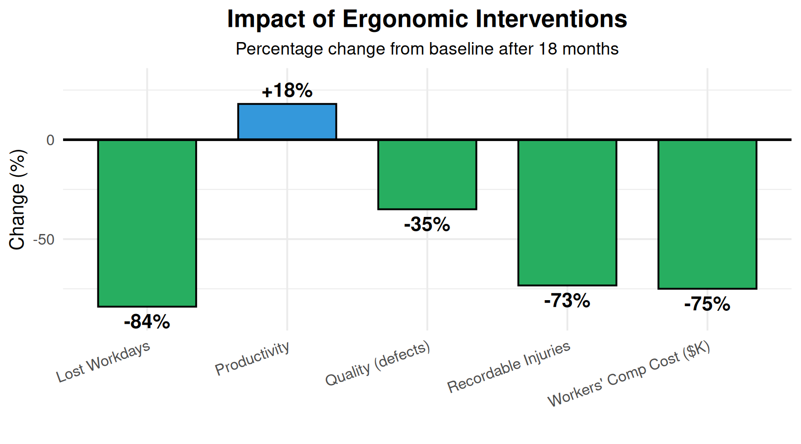
ROI Analysis: (live cell — try different investment or savings figures)
8.12 Summary
| Topic | Key Points |
|---|---|
| **Ergonomics Definition** | Fitting the job to the worker; physical, cognitive, organizational domains |
| **Risk Factors** | Posture, repetition, force, static positions, contact stress, vibration, environment |
| **MSDs** | Injuries to muscles, nerves, tendons; develop gradually from exposure to disability |
| **Prevention** | Engineering controls most effective; proper lifting, neutral postures, recovery time |
| **Design Principles** | Neutral posture, anthropometry, work height optimization, environmental control |
| **Assessment Tools** | REBA for whole body, RULA for upper limb, NIOSH for lifting tasks |
| **AI in Ergonomics** | Real-time monitoring, automated REBA/RULA scoring, continuous assessment |
| **Employer Role** | Management commitment, worker involvement, training, hazard control, evaluation |
8.13 Review Questions
Question 1: What are the seven ergonomic risk factors, and which two are most commonly associated with carpal tunnel syndrome?
The seven ergonomic risk factors are: 1. Awkward Postures 2. Repetition 3. Force 4. Static Positions 5. Contact Stress 6. Vibration 7. Environmental Factors
Carpal tunnel syndrome is most commonly associated with: - Repetition - Repeated wrist movements compress the median nerve - Force - Forceful gripping increases pressure in the carpal tunnel - Also contributing: awkward wrist postures and vibration
Question 2: A worker performs a task 8 times per minute for a 4-hour shift. The cycle time is 7.5 seconds. Is this considered high repetition? Why?
Analysis: - Cycle time: 7.5 seconds (< 15 seconds threshold) - Repetitions per hour: 8 × 60 = 480 (> 240 threshold)
Yes, this is HIGH repetition because: 1. Cycle time is less than 15 seconds 2. Repetitions exceed 240 per hour
Risk Level: High - Immediate intervention needed
Recommended actions: - Job rotation with different tasks - Automation of repetitive elements - Micro-breaks every 20-30 minutes - Workstation redesign to reduce cycle elements
Question 3: Explain why ergonomic design should accommodate the 5th to 95th percentile of the population rather than designing for the “average” person.
Designing for the average excludes most people: - The “average” person in ALL dimensions doesn’t exist - A person may be average height but have long arms or short legs - Designing for only the 50th percentile fits only about 50% of users
The 5th-95th percentile range: - Accommodates 90% of the population - Addresses both small and large users - Provides adjustability rather than fixed dimensions
Application rules: - Clearances (overhead, legroom): Design for 95th percentile (largest) - Reach distances: Design for 5th percentile (smallest) - Work surfaces: Make adjustable to accommodate range
Example: A fixed workstation at 95cm height: - Too high for 5th percentile female (elbow at ~93cm) - Too low for 95th percentile male (elbow at ~117cm) - Adjustable range of 85-115cm accommodates both
Question 4: Calculate the NIOSH Lifting Index for the following task and determine if intervention is needed.
Task Parameters: - Horizontal distance (H): 35 cm - Vertical height (V): 80 cm - Travel distance (D): 50 cm - Asymmetry (A): 0° (symmetric lift) - Frequency: 4 lifts/minute for 1 hour - Coupling: Good (handles) - Actual load: 18 kg
Solution:
LC = 23 kg
HM = 25/35 = 0.714
VM = 1 - 0.003|80-75| = 0.985
DM = 0.82 + 4.5/50 = 0.91
AM = 1 - 0.0032(0) = 1.0
FM = 0.75 (4/min, 1 hour, V>75cm, from table)
CM = 1.0 (good coupling)
RWL = 23 × 0.714 × 0.985 × 0.91 × 1.0 × 0.75 × 1.0
RWL = 11.0 kg
LI = 18 / 11.0 = 1.64
Risk Level: MODERATE (1.0 < LI < 2.0)
Action: Some workers may be at risk - consider changesRecommendations: - Reduce horizontal distance (bring load closer) - Reduce lifting frequency - Use mechanical assist for loads >12 kg
Question 5: What are three advantages of AI-powered ergonomic assessment over traditional methods?
1. Scale and Coverage: - Traditional: 5-10 assessments per day by trained ergonomist - AI: Hundreds or thousands of assessments simultaneously - Can monitor entire facility continuously
2. Consistency and Objectivity: - Traditional: Inter-rater reliability issues; different assessors may score differently - AI: Consistent scoring algorithm applied uniformly - Removes subjective interpretation
3. Real-time Feedback: - Traditional: Assessment completed, report generated days/weeks later - AI: Immediate scoring and alerts - Can provide real-time coaching to workers
Additional advantages: - Lower cost per assessment - Non-disruptive (workers not aware of assessment) - Longitudinal tracking of posture patterns - Data for predictive analytics
8.14 Additional Resources
8.14.1 Videos
Ergonomics Fundamentals: - Introduction to Workplace Ergonomics - Safe Manual Handling Techniques
Assessment Tools: - REBA Assessment Tutorial - RULA Assessment Guide - NIOSH Lifting Equation Explained
AI Ergonomics: - TuMeke AI Ergonomics Demo - VelocityEHS Industrial Ergonomics
8.14.2 Online Tools
8.15 References
- Berlin, C., & Adams, C. (2017). Production Ergonomics: Designing Work Systems to Support Optimal Human Performance. Ubiquity Press.
- Hignett, S., & McAtamney, L. (2000). Rapid Entire Body Assessment (REBA). Applied Ergonomics, 31(2), 201-205.
- McAtamney, L., & Corlett, E.N. (1993). RULA: A Survey Method for Investigation of Work-Related Upper Limb Disorders. Applied Ergonomics, 24(2), 91-99.
- NIOSH. (1994). Applications Manual for the Revised NIOSH Lifting Equation. DHHS (NIOSH) Publication No. 94-110.
- OSHA. (2000). Ergonomics: The Study of Work. OSHA 3125.
- Waters, T.R., Putz-Anderson, V., & Garg, A. (1993). Revised NIOSH Equation for the Design and Evaluation of Manual Lifting Tasks. Ergonomics, 36(7), 749-776.
- ISO 11228-1:2021. Ergonomics — Manual handling — Part 1: Lifting, lowering and carrying.
- ISO 11228-3:2007. Ergonomics — Manual handling — Part 3: Handling of low loads at high frequency.